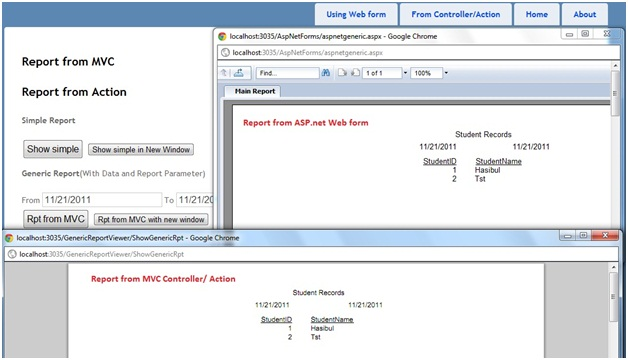

Using Crystal Report in ASP.net MVC and creating generic report viewer
Introduction
A sample VS 2010 project which will show how to use crystal report from ASP.net MVC project. This also shows how to create a generic/ common report viewer for showing crystal report.
Prerequisite
To build and run this sample, you must have Visual Studio 2010 SP1, ASP.net MVC 3 and Crystal Report 13.0.2000.0.
Description
This project illustrates the following topics:
1. Showing crystal report using ASP.net web forms in MVC.
A. In same window
B. In different window
2. Showing crystal report from Controller/action (by generating PDF on fly).
A. In same window
B. In different window
3. Creating Generic/Common report viewer
A. Create Generic Report Viewer Form for showing crystal report through asp.net (*.aspx) page
i. In same window
ii. In different window
B. Create Generic Report Controller class for showing crystal report by pdf on fly.
i. In same window
ii. In different window

Fig: Showing simple report from ASP.net MVC3 Project

Fig: Showing Crystal Report from ASP.net MVC Project with generic report viewer form
Source Code Files
>CR_With_MVC : This is Solution
>AspNetForms : Here we putted aspx pages
>> aspnetgeneric.aspx : This aspx page is used for showing simple report
>> aspnetsimple.aspx : This aspx page is used for showing common report which consist of data
>Content : holds css file
>Controllers : holds controller classes
>>FromMvcController.cs: This controller is used for showing report from MVC
>>GenericReportViewerController.cs : This is generic/Common controller used fro showing report on pdf
>>UsingWebFormController.cs : This is used for showing crystal report using aspx page
>Models : holds entity classes
>> Student.cs
>Rpts: Holds Crystal Reports
>>generic.rpt
>>simple.rpt
>Scripts : Holds script files
>Views : Holds Views
>>FromMvc
>>> Index.cshtml
>>UsingWebForm
>>>Index.cshtml
More Information
Please visit http://hasibulhaque.com/?p=244 Here i have described all the steps.